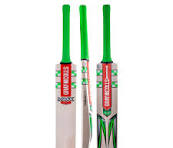
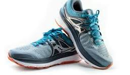
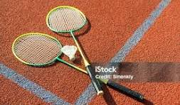

In our store, we offer high-quality cricket bats suitable for players of all ages and skill levels. Made from premium willow wood, each bat is designed for strength, durability, and excellent performance on the field. We have a variety of sizes and brands to meet the needs of beginners, amateurs, and professional cricketers. Our cricket bats not only provide superior control and power but also ensure comfort and confidence while playing. Whether you are practicing in the nets or playing a competitive match, our store has the perfect bat for you.
In our store, we offer a wide range of high-quality footballs perfect for players of all ages and skill levels. Made from durable materials, our footballs provide excellent grip, control, and long-lasting performance on any playing surface. Whether you are practicing, playing in a school match, or enjoying a friendly game, we have footballs in various sizes and designs to suit every need. Our collection ensures both comfort and confidence, making every game more enjoyable for players.

In our store, we offer a wide selection of high-quality sports shoes designed for comfort, performance, and style. Whether you are running, playing football, cricket, or hitting the gym, our shoes provide excellent support, grip, and durability. Available in various sizes, colors, and brands, they cater to athletes of all ages and skill levels. Our sports shoes ensure both safety and confidence, helping you perform at your best while looking great on and off the field.

In our store, we offer a wide range of high-quality badminton equipment, including rackets, shuttlecocks, nets, and shoes. Our products are designed for players of all ages and skill levels, providing excellent performance, durability, and comfort. Whether you are practicing in the backyard, playing friendly matches, or competing professionally, our badminton gear ensures precision, control, and a great playing experience. With detailed images of each product, it’s easy to choose the perfect equipment to enjoy the game to the fullest.